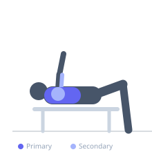

Exercise guide / Machine Chest Press
Machine Chest Press
The machine chest press is a guided horizontal pressing exercise performed on a dedicated chest press machine. The fixed movement path reduces the stabilization demand compared to free-weight pressing, allowing lifters to focus attention on pectoral contraction or to safely train to or near muscular failure without a spotter. It is an effective tool for hypertrophy, beginners, and individuals returning from injury.
Primary muscles
pectoralis major sternal
pectoralis major clavicular
Secondary muscles
deltoid anterior
triceps lateral head
triceps medial head
Stabilizers
pectoralis minor
Equipment
Chest Press Machine


Starting position
- Sit in the chest press machine with the back flat against the pad. Adjust the seat height so the handles are at mid-chest level. Grip the handles with an overhand grip, elbows bent and in line with the hands.
Setup
- Adjust the seat height so handles align with mid-chest. Set the starting position pin if available so you don't have to reach back awkwardly to initiate. Select weight.
Steps
- Step 1: Sit with back firmly against the pad, feet flat on the floor. Grip handles at chest level.
- Step 2: Brace the core and retract the shoulder blades slightly against the pad.
- Step 3: Exhale and press the handles forward until the arms are fully extended but not locked out.
- Step 4: Inhale and slowly return the handles to the starting position, feeling a stretch across the chest.
Coaching cues
- Press your back into the seat throughout — don't let it peel away
- Think about squeezing the pecs together as you extend
Breathing
- Exhale on the press; inhale on the return.
Range of motion
- Return fully to feel a chest stretch on each rep; press to near full extension without hyperextending.
Tempo
- 2-0-2-0
Common mistakes
- Allowing the lower back to arch away from the pad during the press
- Fully locking out the elbows aggressively at full extension
Safety
- Use the machine's start-pin or lever to initiate the rep safely without shoulder strain
- Do not adjust seat mid-set
Training
- strength: 5–10 reps
- hypertrophy: 10–20 reps
- endurance: 15–25 reps
- strength: 3–5 sets
- hypertrophy: 3–4 sets
- endurance: 2–3 sets
- Rest: {'strength': 150, 'hypertrophy': 75, 'endurance': 45}